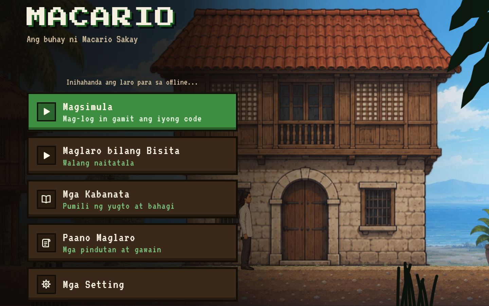
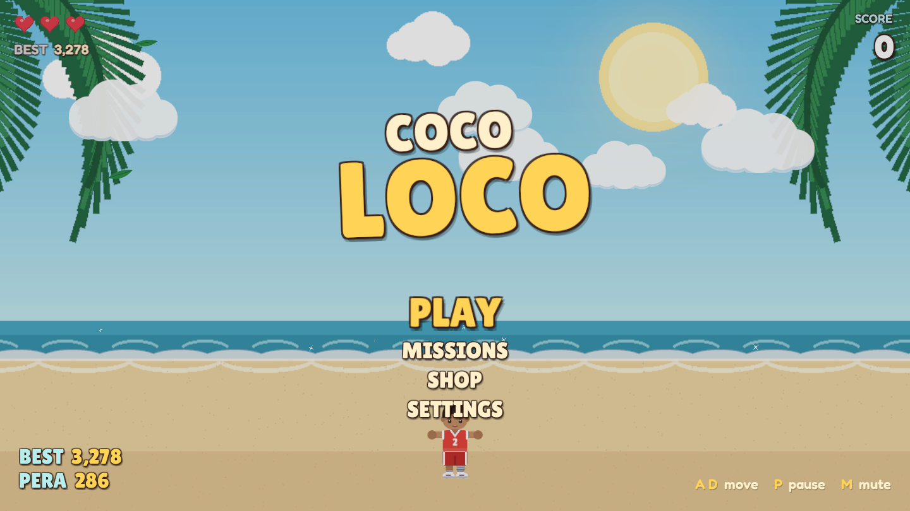
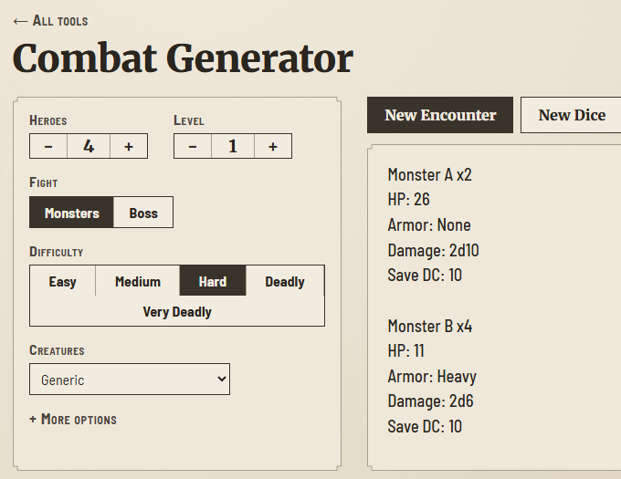
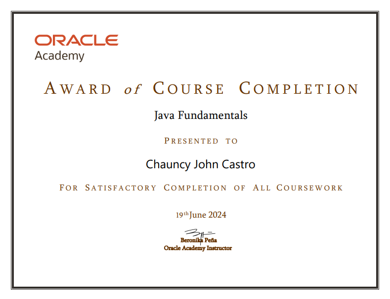
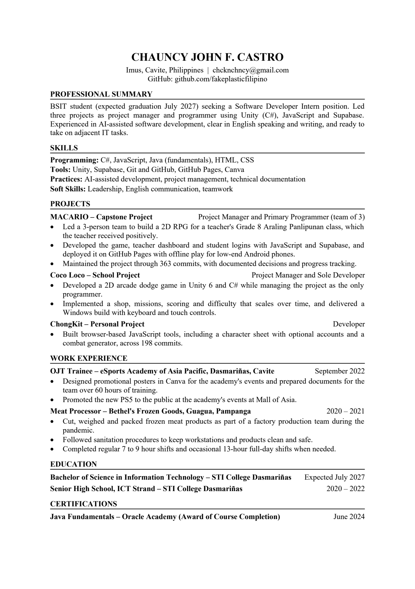

MACARIO, my capstone
A 2D RPG for a Grade 8 Araling Panlipunan class. I led a team of 3 as project manager and primary programmer.
JavaScript and Supabase, with a teacher dashboard and offline play. The teacher liked it.
BSIT student in Imus looking for a software developer internship.

Two games and a set of table tools.

A 2D RPG for a Grade 8 Araling Panlipunan class. I led a team of 3 as project manager and primary programmer.
JavaScript and Supabase, with a teacher dashboard and offline play. The teacher liked it.
An arcade dodge game in Unity 6 and C#, with a shop, missions and difficulty that grows the longer you survive. I managed it and wrote all the code. Windows build.

Browser tools in JavaScript, including a character sheet with optional accounts and a combat generator.

Oracle Academy award of course completion, June 2024.
363
commits, MACARIO
198
commits, ChongKit
Work, training and school, newest first.
2027
Fourth-year student. Expected graduation in July 2027.
2022
Designed event posters in Canva, prepared documents and promoted the new PS5 at Mall of Asia events. 60 hours.
2022
Information and communications technology track.
2021
Cut, weighed and packed frozen meat in a factory team. Worked 7 to 9 hour shifts, and up to 13 hours when needed.
What I use, and how I work.
| Programming | C#, JavaScript, Java (fundamentals), HTML, CSS |
|---|---|
| Tools | Unity, Supabase, Git and GitHub, GitHub Pages, Canva |
| Practices | AI-assisted development, project management, technical documentation |
| Soft skills | Leadership, English communication, teamwork |
Made for applicant tracking systems and for people.
